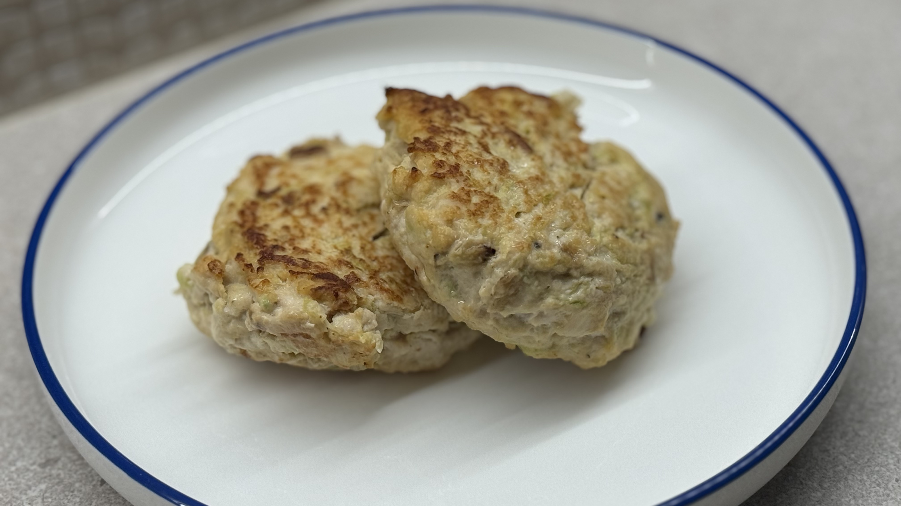

Куриные котлеты

Ингредиенты
- 700-800 г куриного фарша
- 2 средние луковицы (~200-250 г)
- 2-3 зубчика чеснока (по желанию)
- 1 куриное яйцо
- 4-5 кусочков белого хлеба (только мякоть)
- 150 мл молока (для замачивания хлеба)
- 2 ст.л. сметаны (или греческого йогурта)
- 1 ч.л. соли
- 1 ч.л. копченой паприки (по желанию)
- 1/2 ч.л. перца
- Растительное или сливочное масло для жарки
Способ приготовления
- Замочите мякоть батона в молоке на 5-7 минут, затем хорошо отожмите (почти досуха).
- Мелко нарежьте лук и чеснок. Обжарьте их на растительном масле до мягкости и прозрачности. Полностью остудите.
- В большой миске соедините куриный фарш, отжатый хлеб, остывший лук с чесноком, яйцо, сметану, соль, перец и паприку.
- Тщательно вымешайте фарш руками. Затем поднимите его и с силой бросьте обратно в миску - повторите 10-15 раз. Это сделает котлеты нежными и плотными.
- По желанию: уберите фарш в холодильник на 20–30 минут — так он лучше лепится.
- Смочите руки холодной водой и слепите 12-15 котлет (чуть больше куриного яйца).
- Разогрейте масло на среднем огне. Жарьте котлеты по 3-4 минуты с каждой стороны до золотистой корочки.
- Затем поставьте их в духовку, разогретую до 180 °C, на 10 минут (или до того момента, пока фарш внутри полностью не побелеет).
Совет: К фаршу можно добавить один кабачок, натертой на средней терке